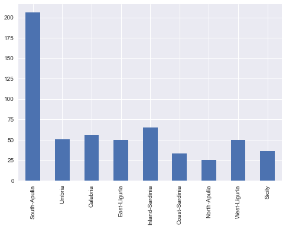

EDA
%matplotlib inline
import numpy as np
import matplotlib.pyplot as plt
import pandas as pd
import seaborn as sns
pd.set_option('display.width', 500)
pd.set_option('display.max_columns', 100)
Italian Olives
I found this data set in the RGGobi book (http://www.ggobi.org/book/), from which the above diagram is taken. It has "the percentage composition of fatty acids found in the lipid fraction of Italian olive oils', with oils from 3 regions of Italy: the North, the South, and Sardinia. The regions themselves are subdivided into areas as shown in the map above. The source for this data is:
Forina, M., Armanino, C., Lanteri, S. & Tiscornia, E. (1983), Classification of Olive Oils from their Fatty Acid Composition, in Martens, H. and Russwurm Jr., H., eds, Food Research and Data Analysis, Applied Science Publishers, London, pp. 189–214.
Exploratory Viz
df = pd.read_csv("local-olives-cleaned.csv")
df.head()
| areastring | region | area | palmitic | palmitoleic | stearic | oleic | linoleic | linolenic | arachidic | eicosenoic | regionstring | |
|---|---|---|---|---|---|---|---|---|---|---|---|---|
| 0 | North-Apulia | 1 | 1 | 10.75 | 0.75 | 2.26 | 78.23 | 6.72 | 0.36 | 0.60 | 0.29 | South |
| 1 | North-Apulia | 1 | 1 | 10.88 | 0.73 | 2.24 | 77.09 | 7.81 | 0.31 | 0.61 | 0.29 | South |
| 2 | North-Apulia | 1 | 1 | 9.11 | 0.54 | 2.46 | 81.13 | 5.49 | 0.31 | 0.63 | 0.29 | South |
| 3 | North-Apulia | 1 | 1 | 9.66 | 0.57 | 2.40 | 79.52 | 6.19 | 0.50 | 0.78 | 0.35 | South |
| 4 | North-Apulia | 1 | 1 | 10.51 | 0.67 | 2.59 | 77.71 | 6.72 | 0.50 | 0.80 | 0.46 | South |
exploring globally
pd.crosstab(df.areastring, df.regionstring)
| regionstring | North | Sardinia | South |
|---|---|---|---|
| areastring | |||
| Calabria | 0 | 0 | 56 |
| Coast-Sardinia | 0 | 33 | 0 |
| East-Liguria | 50 | 0 | 0 |
| Inland-Sardinia | 0 | 65 | 0 |
| North-Apulia | 0 | 0 | 25 |
| Sicily | 0 | 0 | 36 |
| South-Apulia | 0 | 0 | 206 |
| Umbria | 51 | 0 | 0 |
| West-Liguria | 50 | 0 | 0 |
pd.value_counts(df.areastring, sort=False).plot(kind="bar");

pd.value_counts(df.regionstring, sort=False).plot(kind="barh");
acidlist=['palmitic', 'palmitoleic', 'stearic', 'oleic', 'linoleic', 'linolenic', 'arachidic', 'eicosenoic']
df[acidlist].median().plot(kind="bar");
Or one can use aggregate to pass an arbitrary function of to the sub-dataframe. The function is applied columnwise.
dfbymean=df.groupby("regionstring").aggregate(np.mean)
dfbymean.head()
| region | area | palmitic | palmitoleic | stearic | oleic | linoleic | linolenic | arachidic | eicosenoic | |
|---|---|---|---|---|---|---|---|---|---|---|
| regionstring | ||||||||||
| North | 3.0 | 8.006623 | 10.948013 | 0.837351 | 2.308013 | 77.930530 | 7.270331 | 0.217881 | 0.375762 | 0.019735 |
| Sardinia | 2.0 | 5.336735 | 11.113469 | 0.967449 | 2.261837 | 72.680204 | 11.965306 | 0.270918 | 0.731735 | 0.019388 |
| South | 1.0 | 2.783282 | 13.322879 | 1.548019 | 2.287740 | 71.000093 | 10.334985 | 0.380650 | 0.631176 | 0.273220 |
with sns.axes_style("white", {'grid':False}):
dfbymean[acidlist].plot(kind='barh', stacked=True);
sns.despine()
Figuring the dataset by Region
g=sns.FacetGrid(df, col="region")
g.map(plt.scatter,"eicosenoic", "linoleic");
Clearly, region 1 or the South can visually be separated out by eicosenoic fraction itself.
with sns.axes_style("white"):
g=sns.FacetGrid(df, col="region")
g.map(sns.distplot, "eicosenoic")
We make a SPLOM using seaborn to see in what space the regions may be separated. Note that linoleic and oleic seem promising. And perhaps arachidic paired with eicosenoic.
sns.pairplot(df, vars=acidlist, hue="regionstring", size=2.5, diag_kind='kde');
Pandas supports conditional indexing: documentation. Lets use it to follow up on the clear pattern of Southern oils seeeming to be separable by just the eicosenoic feature.
Indeed this is the case! Can also be seen using parallel co-ordinates:
from pandas.tools.plotting import parallel_coordinates
dfna=df[acidlist]
#normalizing by range
dfna_norm = (dfna - dfna.mean()) / (dfna.max() - dfna.min())
with sns.axes_style("white"):
parallel_coordinates(df[['regionstring']].join(dfna_norm), 'regionstring', alpha=0.3)
Figuring the South of Italy by Area
dfsouth=df[df.regionstring=='South']
dfsouth.head()
| areastring | region | area | palmitic | palmitoleic | stearic | oleic | linoleic | linolenic | arachidic | eicosenoic | regionstring | |
|---|---|---|---|---|---|---|---|---|---|---|---|---|
| 0 | North-Apulia | 1 | 1 | 10.75 | 0.75 | 2.26 | 78.23 | 6.72 | 0.36 | 0.60 | 0.29 | South |
| 1 | North-Apulia | 1 | 1 | 10.88 | 0.73 | 2.24 | 77.09 | 7.81 | 0.31 | 0.61 | 0.29 | South |
| 2 | North-Apulia | 1 | 1 | 9.11 | 0.54 | 2.46 | 81.13 | 5.49 | 0.31 | 0.63 | 0.29 | South |
| 3 | North-Apulia | 1 | 1 | 9.66 | 0.57 | 2.40 | 79.52 | 6.19 | 0.50 | 0.78 | 0.35 | South |
| 4 | North-Apulia | 1 | 1 | 10.51 | 0.67 | 2.59 | 77.71 | 6.72 | 0.50 | 0.80 | 0.46 | South |
We make a couple of SPLOM's, one with sicily and one without sicily, to see whats separable. Sicily seems to be a problem. As before, see the KDE's first to see if separability exists and then let the eye look for patterns.
sns.pairplot(dfsouth, hue="areastring", size=2.5, vars=acidlist, diag_kind='kde');
sns.pairplot(dfsouth[dfsouth.areastring!="Sicily"], hue="areastring", size=2.5, vars=acidlist, diag_kind='kde');

Seems that combinations of oleic, palmitic, palmitoleic might be useful?